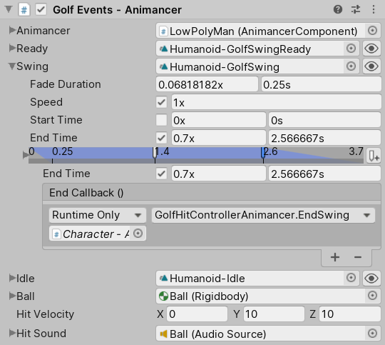

Difficulty: Intermediate - Recommended after Footstep Events
Location: Assets/Plugins/Animancer/Examples/05 Events/02 Golf Events
Namespace:
Animancer.Examples.Events
This example expands upon the Quick Play scene to demonstrate how you can utilise the various types of Events supported by Animancer. It shows how you can have a character hit a ball at a specific time and adjust the end time of the animation to create a smoother transition. Both of these tasks are performed in several different ways using Unity's Animation Events and Animancer Events so that you can compare the differences between those systems.
Pro-Only Features are used in this example: Animancer Events and custom Fade durations. Animancer Lite allows you to try out these features in the Unity Editor, but they are not available in runtime builds unless you purchase Animancer Pro.

The base GolfHitController script looks like this (with the comments removed since we're about to explain how it works):
using Animancer;
using System;
using UnityEngine;
public abstract class GolfHitController : MonoBehaviour
{
[SerializeField] protected AnimancerComponent _Animancer;
[SerializeField] protected ClipState.Transition _Ready;
[SerializeField] protected ClipState.Transition _Swing;
[SerializeField] protected ClipState.Transition _Idle;
[SerializeField] private Rigidbody _Ball;
[SerializeField] private Vector3 _HitVelocity;
[SerializeField] private AudioSource _HitSound;
public enum State { Ready, Swing, Idle, }
public State CurrentState { get; private set; }
private Vector3 _BallStartPosition;
protected virtual void Awake()
{
_BallStartPosition = _Ball.position;
_Ball.isKinematic = true;
}
protected void OnEnable()
{
ReturnToReady();
}
protected void Update()
{
if (Input.GetMouseButtonDown(0))
{
switch (CurrentState)
{
case State.Ready: StartSwing(); break;
case State.Swing: TryCancelSwing(); break;
case State.Idle: ReturnToReady(); break;
default: throw new ArgumentException("Unsupported State: " + CurrentState);
}
}
}
protected virtual void StartSwing()
{
CurrentState = State.Swing;
_Animancer.Play(_Swing);
}
private void TryCancelSwing()
{
if (_Ball.isKinematic)
{
CurrentState = State.Ready;
_Animancer.Play(_Ready);
}
}
public void ReturnToReady()
{
CurrentState = State.Ready;
_Animancer.Play(_Ready);
_Ball.isKinematic = true;
_Ball.position = _BallStartPosition;
}
public void HitBall()
{
_Ball.isKinematic = false;
_Ball.velocity = _HitVelocity;
_HitSound.Play();
}
public void EndSwing()
{
CurrentState = State.Idle;
var fadeDuration = EndEventReceiver.GetFadeOutDuration();
_Animancer.Play(_Idle, fadeDuration);
}
}
To demonstrate the differences between the available event systems, this example consists of 4 other scripts which Inherit from GolfHitController so they can all share the same general logic but implement their own events for hitting the ball and determining when the next animation should start:
| # | Script | Purpose |
|---|---|---|
| 1 | GolfHitControllerAnimationSimple |
Uses a Simple Animation Event and End Animation Event. |
| 2 | GolfHitControllerAnimation |
Uses a regular Animation Event and End Animation Event. |
| 3 | GolfHitControllerAnimancer |
Uses Animancer Events configured in the Inspector. |
| 4 | GolfHitControllerAnimancerHybrid |
Uses Animancer Events which have their times configured in the Inspector but their callbacks are left blank so that they can be assigned using code (without needing to hard-code the times). |
Base Script
The base GolfHitController script is fairly simple so you may want to simply skip ahead to the Hit Events section where it starts explaining the setup of the actual events.
Fields
[SerializeField] protected AnimancerComponent _Animancer;
[SerializeField] protected ClipState.Transition _Ready;
[SerializeField] protected ClipState.Transition _Swing;
[SerializeField] protected ClipState.Transition _Idle;
[SerializeField] private Rigidbody _Ball;
[SerializeField] private Vector3 _HitVelocity;
[SerializeField] private AudioSource _HitSound;
Normally it would be good to make Read-Only Properties to wrap fields you want other classes to access so that those classes do not accidentally change any of the fields this script does not expect to change. But for this example, it is easier to just let the Inheriting classes access protected fields directly.
The fields are given mostly the same values for each of the characters except for the _Swing Transition where the ones using Animation Events need to use a duplicate of the original Humanoid-GolfSwing animation with the events added to it:
| Animation Events | Animancer Events |
|---|---|
1. Animation Simple: uses the Humanoid-GolfSwing-WithEvents animation with an additional reference to a  |
3. Animancer: uses the Animancer Events in the Transition configured in the Inspector to trigger the Hit Event and End Event.  |
2. Animation: uses the same Humanoid-GolfSwing-WithEvents animation as above.  |
4. Animancer Hybrid: uses Animancer Events with the same times as above but the callbacks left blank.  |
It also has a simple Enum to represent the character's current state and another field to store the initial position of the ball:
public enum State { Ready, Swing, Idle, }
public State CurrentState { get; private set; }
private Vector3 _BallStartPosition;
The CurrentState could have been a private field for this example, but we will be reusing this script in the Game Manager example and will need to check its value from another class.
Startup
When the scene starts, we store the position of the ball so we can teleport it back there later and make sure its Rigidbody is Kinematic so that it does not roll away before the character hits it. The Awake method is virtual in case any inheriting scripts need to do anything else on startup.
protected virtual void Awake()
{
_BallStartPosition = _Ball.position;
_Ball.isKinematic = true;
}
We also want to make sure the character is in the Ready state on startup. It would be fine to do that in Awake for this example, but the Hybrid Mini Game example reuses this script and deactivates it while the Mini Game is not being played so we want to always enter the ready state when the Mini Game starts:
protected void OnEnable()
{
ReturnToReady();
}
The contents of the ReturnToReady method could simply be here instead of needing a separate method, but when other methods (like Update) call it we would rather be clear that we specifically want to "return to the ready state" instead of some arbitrary "do what we did on startup".
Also note that this method is protected instead of private. Being protected allows Inheriting classes to call it which we do not want, but it also means that if such a class tries to declare its own OnEnable method the compiler will give them a warning that this method already exists so they can come and make this method virtual if necessary. Otherwise Unity would call the OnEnable method in the derived class but not this one, which would very likely lead to errors that can be annoying to track down.
Input
Using an Enum to represent the character's current state means we can easily have them go to the next state whenever the player clicks the mouse using a switch statement:
protected void Update()
{
if (Input.GetMouseButtonDown(0))
{
switch (CurrentState)
{
case State.Ready: StartSwing(); break;
case State.Swing: TryCancelSwing(); break;
case State.Idle: ReturnToReady(); break;
default: throw new ArgumentException("Unsupported State: " + CurrentState);
}
}
}
To start the swing we simply set the state and play the appropriate animation:
protected virtual void StartSwing()
{
CurrentState = State.Swing;
_Animancer.Play(_Swing);
}
If the player clicks while swinging and the ball has not been hit yet, the swing can be cancelled to immediately return to the ready state. But after the ball has been hit, the character must fully complete the swing animation:
private void TryCancelSwing()
{
if (_Ball.isKinematic)
{
CurrentState = State.Ready;
_Animancer.Play(_Ready);
}
}
Each of the Events will be triggered at some point during the swing by whichever event system is being used:
HitBallsends the ball flying.EndSwingputs the character in theIdlestate so they can relax after they hit the ball.
If the player clicks the mouse again while Idle, we return to the Ready state, teleport the ball back to its starting position, and make it Kinematic again so it does not roll away:
public void ReturnToReady()
{
CurrentState = State.Ready;
_Animancer.Play(_Ready);
_Ball.isKinematic = true;
_Ball.position = _BallStartPosition;
}
That method could have been private for this example, but we will be reusing this script in the Game Manager example and will need to call it from another class.
Events
The following two methods are called by whichever event system is being used by each character.
The Hit Event makes the ball Non-Kinematic so that it will act according to physics, gives it an initial velocity, and plays a hit sound:
public void HitBall()
{
_Ball.isKinematic = false;
_Ball.velocity = _HitVelocity;
_HitSound.Play();
}
In a real golf game you would probably calculate the hit velocity based on player input.
The End Event transitions the character into the Idle state. The events are set up to call this method before the _Swing animation actually finishes so that it can Fade into the new animation more smoothly. This is done by using the remaining duration of the current animation as the fade duration:
public void EndSwing()
{
CurrentState = State.Idle;
var fadeDuration = EndEventReceiver.GetFadeOutDuration();
_Animancer.Play(_Idle, fadeDuration);
}
For this example we are just using the regular Humanoid-Idle animation, which does not account for the golf club and ends up sticking it through the ground.
Hit Events
The HitBall method explained above is called at some point during the _Swing animation in a different way for each event system.
1. Simple Animation Events
The SimpleEventReceiver script is set up to receive Animation Events with the Function Name "Event" and invoke a Delegate in response, allowing you to use that same Function Name for every animation and register any method you want instead of needing to have your method on a script attached to the same GameObject as the Animator component. So the character is set up as follows:
- The
SimpleEventReceivercomponent is attached to the sameGameObjectas theAnimatorcomponent so it can receive the event, but theGolfHitControllerAnimationSimplecomponent does not need to be. - The
GolfHitControllerAnimationSimplescript overrides itsStartSwingmethod to register itsHitBallmethod as the receiver delegate in theSimpleEventReceivercomponent:
protected override void StartSwing()
{
base.StartSwing();
var state = _Animancer.States.Current;
_EventReceiver.OnEvent.Set(state, (animationEvent) => HitBall());
}
Since we are using the Set method to specify which state we expect the event to come from, any events with the same name that come from other animations will be ignored. Likewise, if anything starts another animation, this callback will no longer be triggered. If we had set the _EventReceiver.OnEvent.Callback directly, it would still get invoked if something interrupts this state and the event occurs while it was fading out. This could mean that a cancelled animation triggers a callback which was registered for a new animation, likely far earlier than desired.
- The Humanoid-GolfSwing-WithEvents animation has an event with the Function Name "Event".


- When that event occurs, the
SimpleEventReceivercomponent receives it and invoked the registered delegate (which is theHitBallmethod from step 2).
2. Animation Events
The setup of the second character is very similar to the first, except that it does not have a SimpleEventReceiver so it instead has to receive the "Event" function directly by declaring a method with that name and being attached to the same GameObject as the Animator component:
private void Event()
{
HitBall();
}
We could have avoided the need for that method by making another copy of the Humanoid-GolfSwing animation to use "HitBall" as the Function Name instead of "Event". But that only demonstrates one of the weaknesses of Animation Events, which is that everything using an animation shares the same events so if you want different ones you need to duplicate the entire animation which is a waste of memory if nothing else.
3. Animancer Events
The GolfHitControllerAnimancer script is actually empty because the base GolfHitController already has everything we need to be able to set up Animancer Events in the Inspector. The event callback is set up using a UnityEvent just like a UI Button:

4. Hybrid Animancer Events
The last character also uses Animancer Events, but this time a Hybrid approach:
- The
Event Timeis still defined in the Inspector. This makes it easy for non-programmers to Preview and tweak the value.

- But the
Event Callbackis left blank and theEvent Nameis set so that the script can then find the event with that name and set the callback. This allows all the logic to stay inside the script, making it clear that the_Swinganimation will trigger theHitBallevent instead of needing to check the Inspector to find out what events it has.
protected override void Awake()
{
base.Awake();
_Swing.Events.SetCallback("Hit", HitBall);// See "Avoiding Magic Strings" below.
// ... Initialise the End Event as well.
}
If we did not set the Event Name in the Inspector, we could just access it by index like so:
_Swing.Events.SetCallback(0, HitBall);
But that hard-codes the assumption that there will not be any other events before the one we want.
Or if we did not create the event in the Inspector, we could create it from scratch like so:
_Swing.Events.Add(new AnimancerEvent(0.365f, OnHitBall));
But that would hard-code the event time into the script instead of allowing us to use the Transition Preview Window to see what the animated model looks like while we adjust the event time.
Avoiding Magic Strings
The SetCallback call above uses the Magic String "Hit", which is not ideal because the Inspector would give no indication of what event name was expected and you would need to type the same name every time you add that script to an object. The EventNamesAttribute allows you to avoid that problem by replacing the regular text field used for the Event Name in the Inspector with a dropdown menu containing a specific set of allowed options:

In a real project, you would usually put the EventNamesAttribute on the specific transition field you want it to apply to:
[SerializeField]
[EventNames(...)]
private ClipState.Transition _Swing;
But since the _Swing field in this example is declared in the base GolfHitController script which is shared by all 4 characters, we have instead applied it to the GolfHitControllerAnimancerHybrid class which is only used for the hybrid character:
[EventNames(...)]
public sealed class GolfHitControllerAnimancerHybrid : GolfHitController
{
}
There are several different constructors you can use depending on how you want to specify the names which are explained in the API documentation for EventNamesAttribute, but in this case we are using a simple constant (HitEventName) so that we can reference the same value in both the attribute and when setting the callback:
[EventNames(HitEventName)]
public sealed class GolfHitControllerAnimancerHybrid : GolfHitController
{
public const string HitEventName = "Hit";
protected override void Awake()
{
...
_Swing.Events.SetCallback(HitEventName, HitBall);
End Events
| Standard End | Early End |
|---|---|
 |
 |
If we wait for the actual end of the swing animation before we start transitioning to idle (the video on the left), we can observe an unnatural change in the motion when the transition begins. The swing animation goes up to the top of the arc and begins to relax, then when that animation actually finishes it starts transitioning from that pose to Idle. It's fairly smooth, but it's clearly a different motion from the end of the swing. This is made worse by the fact that the Swing animation ends in a pose similar to the one it started in which isn't the Idle pose we want to be in, so the character relaxes towards one pose then suddenly decides to go to a different pose.
This can be improved by simply starting the transition early (the video on the right) and having it last for the entire remaining duration of the swing animation so that the "relaxation" of the character's pose consistently comes from both the end of the swing animation and from the Fade towards Idle at the same time. This is done by having the EndSwing method call EndEventReceiver.GetFadeOutDuration to get the remaining duration instead of using the regular duration of the _Idle transition:
public void EndSwing()
{
CurrentState = State.Idle;
var fadeDuration = EndEventReceiver.GetFadeOutDuration();
_Animancer.Play(_Idle, fadeDuration);
}
1. Simple Animation Events and 2. Animation Events
The GolfHitControllerAnimation and GolfHitControllerAnimationSimple scripts both have the exact same Awake method to assign EndSwing as the OnEnd callback of the _Swing animation:
protected override void Awake()
{
base.Awake();
_Swing.Events.OnEnd = EndSwing;
}
That on its own would still only trigger EndSwing at the very end of the animation, but the Humanoid-GolfSwing-WithEvents animation they use also has another event with the Function Name "End" which will trigger that callback early:


3. Animancer Events
As with the Hit Event, the GolfHitControllerAnimancer script is empty and has its events defined entirely in the Inspector:

4. Hybrid Animancer Events
As with the Hit Event, the GolfHitControllerAnimancerHybrid script has its time set in the Inspector with the callback left blank:

Then it assigns EndSwing as the callback just like the first two characters did above:
protected override void Awake()
{
base.Awake();
// ... Initialise the Hit Event as shown above.
_Swing.Events.OnEnd = EndSwing;
}